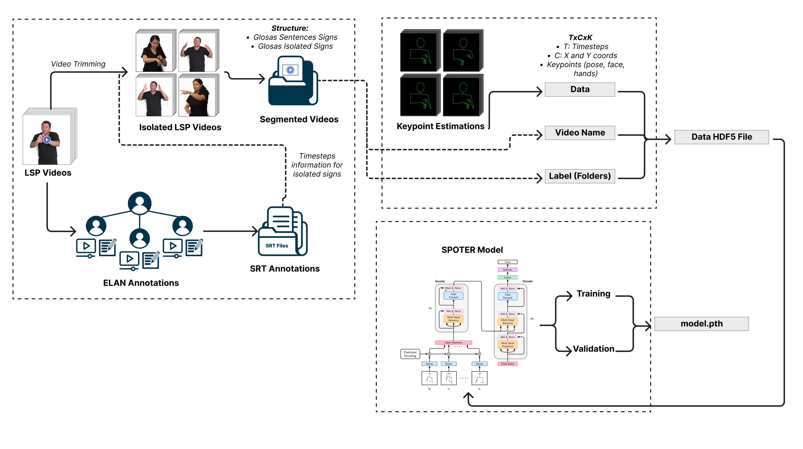
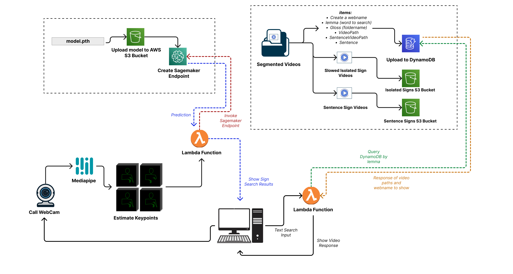

Documentation Overview#
This documentation provides an overview of the Dictionary LSP to Spanish and guides you through the process of getting started with using the system. It outlines the necessary requirements, the overall structure of the Dictionary LSP to Spanish, and the workflow involved in building the system effectively.
What You Need to Get Started#
Access to a computer with an internet connection.
Basic familiarity with the Spanish language and Peruvian Sign Language (LSP).
AWS CLI installed in your local machine and AWS Credentials set up.
Python installed in your local machine or virtual environments (library requirements are detailed in each step)
With these prerequisites in place, you are ready to explore and utilize the Dictionary LSP to Spanish.
Overview of the Dictionary LSP to Spanish#
The Dictionary LSP to Spanish is a comprehensive resource that facilitates the translation of terms and phrases from Peruvian Sign Language (LSP) to Spanish. It provides a rich glossary of signs, including videos, translations, sign language transcriptions, and example sentences for each term. The Dictionary LSP to Spanish serves as a valuable tool for learning LSP and bridging the communication gap between the deaf community and Spanish speakers.
Overview of the Workflow#
The workflow to build a Dictionary LSP required two main modules: Model Building and Deployment
Model Building Workflow#
The model building workflow consists of training a Sign Language Recognition (SLR) model with the primary task of interpreting the signs performed in the search for signs in the LSP dictionary (Sign Language to Spanish). To achieve this, a preprocessed and properly prepared database is essential to feed the SLR model. The database underwent a series of steps for video preparation and annotation, data preparation based on landmarks, and finally, the training of a Transformer-based model known as SPOTER.

Model Deployment Workflow#
Building upon the trained model, the deployment of this model into production requires two elements from the previous process: the model.pth file and the segmented videos (isolated sign videos and sentence videos). This stage consists of two parts.
Part 1: Inference for Sign Search Production
For the deployment of sign search functionality, we utilize the AWS Sagemaker services and S3 buckets. Leveraging the power of Sagemaker, we perform inference to enable seamless sign language searches within the application. The isolated sign videos and sentences are processed to extract meaningful information, allowing users to easily search for sign language translations.
Part 2: Text-Based Search
In addition to sign-based searches, we also support text-based searches using both S3 and DynamoDB as No-SQL tables. This enables efficient storage and retrieval of relevant data for text-based queries. Leveraging AWS Lambda functions, we efficiently manage the initialization and execution of each part of the search process, providing a seamless and responsive experience for users based on their specific needs and preferences.

Throughout this documentation, we will provide detailed instructions and explanations for each step of the workflow, enabling you to make the most of the Dictionary LSP to Spanish and effectively engage with the LSP language and community.